Le Soleil Ardent PrincipaleChapitre I — Les Rizières Desséchées
Prérequis
Aucun, disponible dès l’arrivée.
Donneur
Doyen Wen (Doyen du village) — Maison du Doyen Wen (partie nord-est de l’écran) Itinéraire depuis le village : Hameau de Dongqiao → Maison du Doyen Wen
Objectifs
Vaincre : Abattre le Soleil Ardent (sanctuaire à l'est des Rizières Desséchées, au-delà de la digue) Lieu : Rizières Desséchées (partie est de l’écran) — itinéraire : Hameau de Dongqiao → Digue et Marais Craquelés → Rizières Desséchées
Soleil Ardent — niveau 6, ne réapparaît pas, immobile (sentinelle)
Lieu : Rizières Desséchées (partie est de l’écran)
Espèce : Soleil Ardent (Soleil) — Force : Air (jaune) — Faiblesse : Feu (rouge) — rapide et sournois
Récompense
80 pièces d’or · 600 points d’expérience · composant de flèche : Éclat du Soleil Ardent
Où chercher
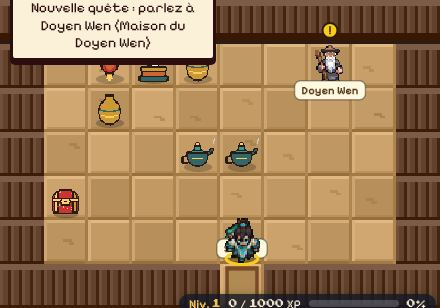
1
Maison du Doyen Wen : 1 Doyen Wen (donne la quête) (cliquer pour agrandir)
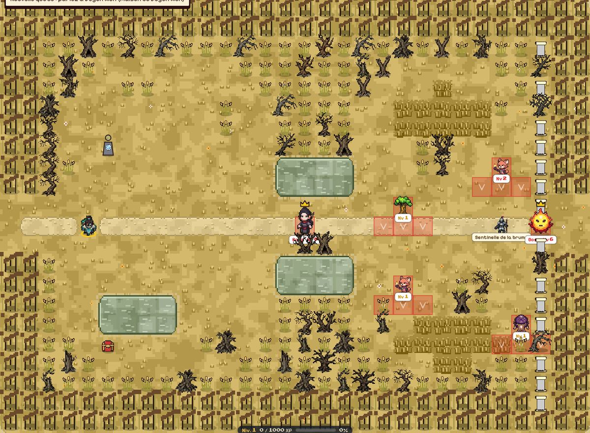
1
Rizières Desséchées : 1 Soleil Ardent (objectif) (cliquer pour agrandir)
Yan (Prêtresse du feu repentie) — Petit temple de Yan (partie nord de l’écran) Itinéraire depuis le village : Hameau des Braises Sages → Petit temple de Yan
Objectifs
Vaincre : Abattre le Soleil de Magma (sanctuaire des Gorges du Volcan, au-delà du défilé) Lieu : Gorges du Volcan (partie est de l’écran) — itinéraire : Hameau des Braises Sages → Coulées et Passerelles Rougeoyantes → Gorges du Volcan
Soleil de Magma — niveau 9, ne réapparaît pas, immobile (sentinelle)
Lieu : Gorges du Volcan (partie est de l’écran)
Espèce : Soleil de Magma (Soleil) — Force : Feu (rouge) — Faiblesse : Eau (bleu) — très robuste, frappe fort, carapace épaisse, cogneur
Récompense
110 pièces d’or · 1900 points d’expérience · composant de flèche : Éclat du Soleil de Magma
Où chercher
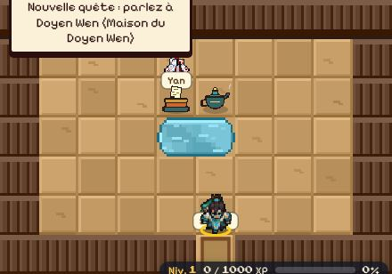
1
Petit temple de Yan : 1 Yan (donne la quête) (cliquer pour agrandir)
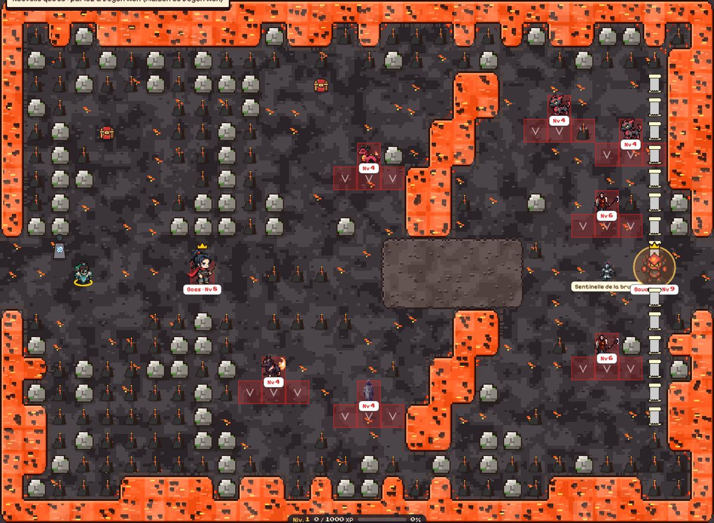
1
Gorges du Volcan : 1 Soleil de Magma (objectif) (cliquer pour agrandir)
Dawa (Guide du désert) — Tente de Dawa (partie nord de l’écran) Itinéraire depuis le village : Caravansérail de Yueya → Tente de Dawa
Objectifs
Vaincre : Trouver et abattre le vrai Soleil des Mirages parmi ses doubles (Désert de Gobi) Lieu : Désert de Gobi (partie sud-est de l’écran) — itinéraire : Caravansérail de Yueya → Dunes des Voix Sablées → Désert de Gobi
Soleil des Mirages — niveau 14, ne réapparaît pas, immobile (sentinelle)
Lieu : Désert de Gobi (partie sud-est de l’écran)
Espèce : Soleil des Mirages (Soleil) — Force : Eau (bleu) — Faiblesse : Terre (vert) — lanceur de sorts
Récompense
140 pièces d’or · 3230 points d’expérience · composant de flèche : Éclat du Soleil des Mirages
Où chercher
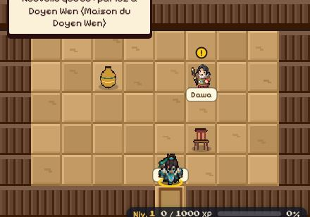
1
Tente de Dawa : 1 Dawa (donne la quête) (cliquer pour agrandir)
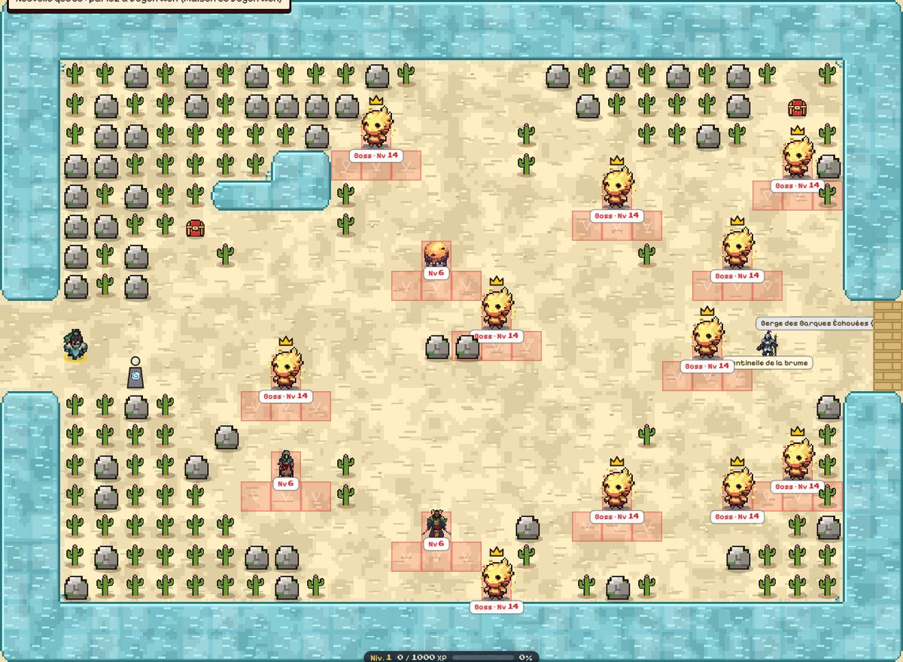
1
Désert de Gobi : 1 Soleil des Mirages (objectif) (cliquer pour agrandir)
Gu (Passeur du fleuve) — Cabane du passeur Gu (partie nord de l’écran) Itinéraire depuis le village : Port-à-Sec de Hekou → Cabane du passeur Gu
Objectifs
Vaincre : Abattre le Soleil des Eaux Taries (sanctuaire du Lit du Fleuve Jaune, au sud-est) Lieu : Lit du Fleuve Jaune (partie est de l’écran) — itinéraire : Port-à-Sec de Hekou → Méandres de Boue et d'Écluses → Lit du Fleuve Jaune
Soleil des Eaux Taries — niveau 19, ne réapparaît pas, immobile (sentinelle)
Lieu : Lit du Fleuve Jaune (partie est de l’écran)
Espèce : Soleil des Eaux Taries (Soleil) — Force : Feu (rouge) — Faiblesse : Eau (bleu) — très robuste, cogneur
Récompense
180 pièces d’or · 6670 points d’expérience · composant de flèche : Éclat du Soleil des Eaux Taries
Où chercher
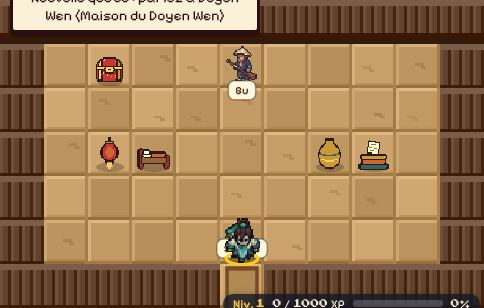
1
Cabane du passeur Gu : 1 Gu (donne la quête) (cliquer pour agrandir)
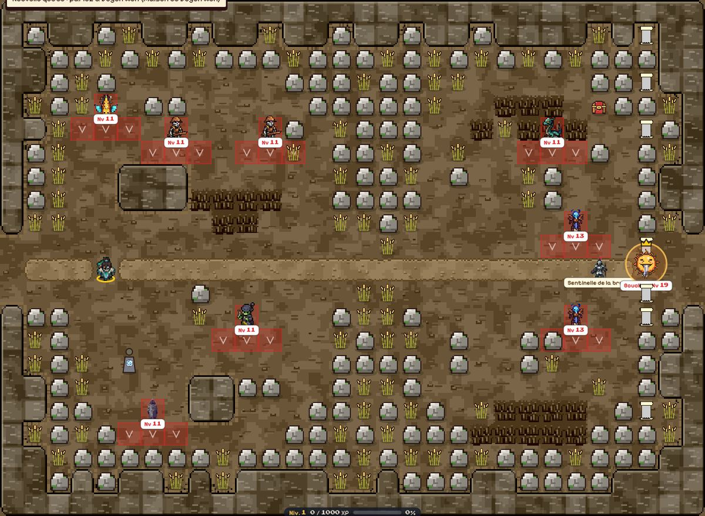
1
Lit du Fleuve Jaune : 1 Soleil des Eaux Taries (objectif) (cliquer pour agrandir)
Zhen (Moine du temple brûlé) — Cellule du moine Zhen (partie nord-ouest de l’écran) Itinéraire depuis le village : Village des Cent Tiges → Cellule du moine Zhen
Objectifs
Vaincre : Abattre le Soleil de Cendres (sanctuaire de la Forêt de Bambous Calcinée, au nord-est) Lieu : Forêt de Bambous Calcinée (partie est de l’écran) — itinéraire : Village des Cent Tiges → Sentier des Tiges Cendrées → Forêt de Bambous Calcinée
Soleil de Cendres — niveau 24, ne réapparaît pas, immobile (sentinelle)
Lieu : Forêt de Bambous Calcinée (partie est de l’écran)
Espèce : Soleil de Cendres (Soleil) — Force : Terre (vert) — Faiblesse : Air (jaune) — très robuste, carapace épaisse, lanceur de sorts
Récompense
230 pièces d’or · 10910 points d’expérience · composant de flèche : Éclat du Soleil de Cendres
Où chercher
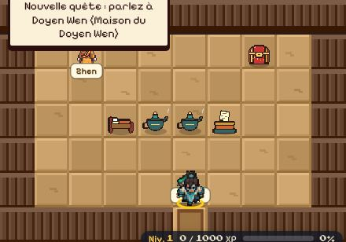
1
Cellule du moine Zhen : 1 Zhen (donne la quête) (cliquer pour agrandir)
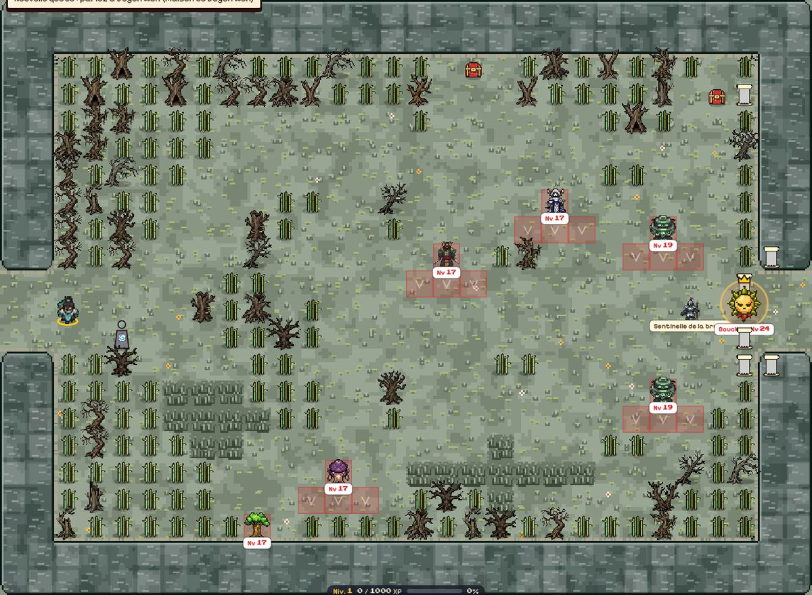
1
Forêt de Bambous Calcinée : 1 Soleil de Cendres (objectif) (cliquer pour agrandir)
Lei (Ermite du tonnerre) — Grotte-cabane de Lei (partie nord de l’écran) Itinéraire depuis le village : Village des Forges-Éclairs → Grotte-cabane de Lei
Objectifs
Vaincre : Abattre le Soleil des Orages (sanctuaire des Monts du Tonnerre, au sud-est) Lieu : Monts du Tonnerre (partie est de l’écran) — itinéraire : Village des Forges-Éclairs → Crêtes Foudroyées → Monts du Tonnerre
Soleil des Orages — niveau 30, ne réapparaît pas, immobile (sentinelle)
Lieu : Monts du Tonnerre (partie est de l’écran)
Espèce : Soleil des Orages (Soleil) — Force : Air (jaune) — Faiblesse : Feu (rouge) — très robuste, carapace épaisse, défenseur
Récompense
290 pièces d’or · 14500 points d’expérience · composant de flèche : Éclat du Soleil des Orages
Où chercher
1
Grotte-cabane de Lei : 1 Lei (donne la quête) (cliquer pour agrandir)
1
Monts du Tonnerre : 1 Soleil des Orages (objectif) (cliquer pour agrandir)
Wu (Chasseur) — Pavillon du chasseur Wu (partie nord-est de l’écran) Itinéraire depuis le village : Enclos de Caoyuan → Pavillon du chasseur Wu
Objectifs
Vaincre : Abattre la meute embrasée puis le Soleil des Bêtes Folles (sanctuaire de la Plaine des Fauves, au sud-est) Lieu : Plaine des Fauves (partie est de l’écran) — itinéraire : Enclos de Caoyuan → Hautes Herbes de Cendre → Plaine des Fauves
Soleil des Bêtes Folles — niveau 35, ne réapparaît pas, immobile (sentinelle)
Lieu : Plaine des Fauves (partie est de l’écran)
Espèce : Soleil des Bêtes Folles (Soleil) — Force : Feu (rouge) — Faiblesse : Eau (bleu) — très robuste, cogneur
Récompense
360 pièces d’or · 18120 points d’expérience · composant de flèche : Éclat du Soleil des Bêtes Folles
Où chercher
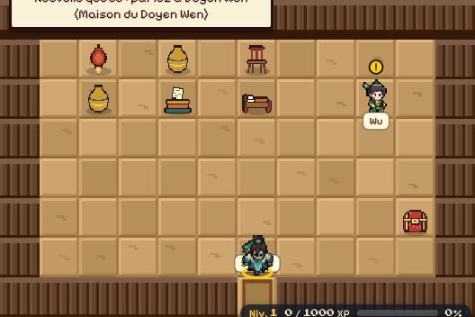
1
Pavillon du chasseur Wu : 1 Wu (donne la quête) (cliquer pour agrandir)
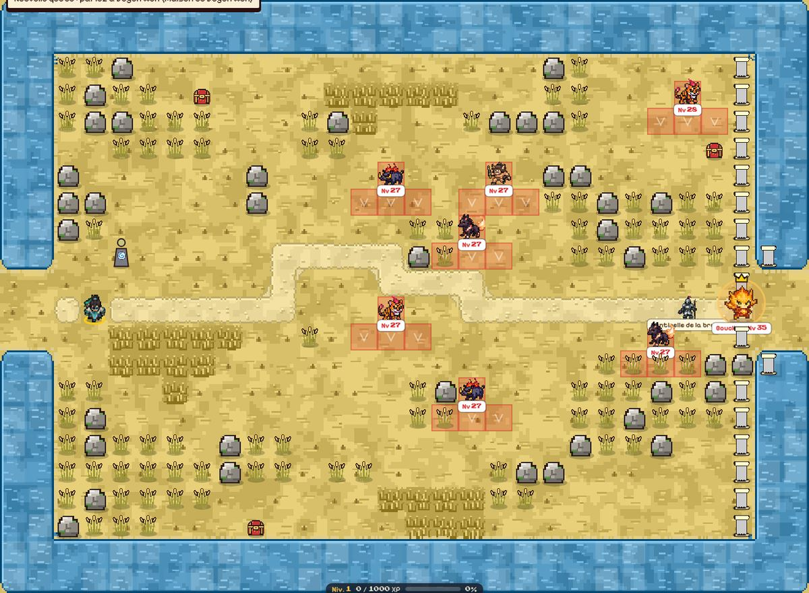
1
Plaine des Fauves : 1 Soleil des Bêtes Folles (objectif) (cliquer pour agrandir)
Longwang (Envoyé du Roi-Dragon) — Pavillon de l'envoyé (partie nord de l’écran) Itinéraire depuis le village : Port aux Perles de Haiyan → Pavillon de l'envoyé
Objectifs
Vaincre : Abattre le Soleil des Marées (sanctuaire du Rivage de la Mer Orientale, au sud-est) Lieu : Rivage de la Mer Orientale (partie est de l’écran) — itinéraire : Port aux Perles de Haiyan → Falaises et Criques du Dragon → Rivage de la Mer Orientale
Soleil des Marées — niveau 40, ne réapparaît pas, immobile (sentinelle)
Lieu : Rivage de la Mer Orientale (partie est de l’écran)
Espèce : Soleil des Marées (Soleil) — Force : Eau (bleu) — Faiblesse : Terre (vert) — très robuste, frappe fort, carapace épaisse, lanceur de sorts
Récompense
440 pièces d’or · 21780 points d’expérience · composant de flèche : Éclat du Soleil des Marées
Où chercher
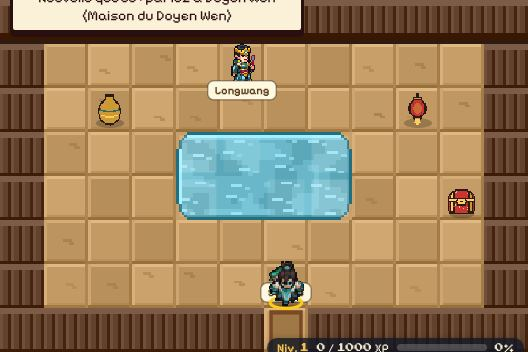
1
Pavillon de l'envoyé : 1 Longwang (donne la quête) (cliquer pour agrandir)
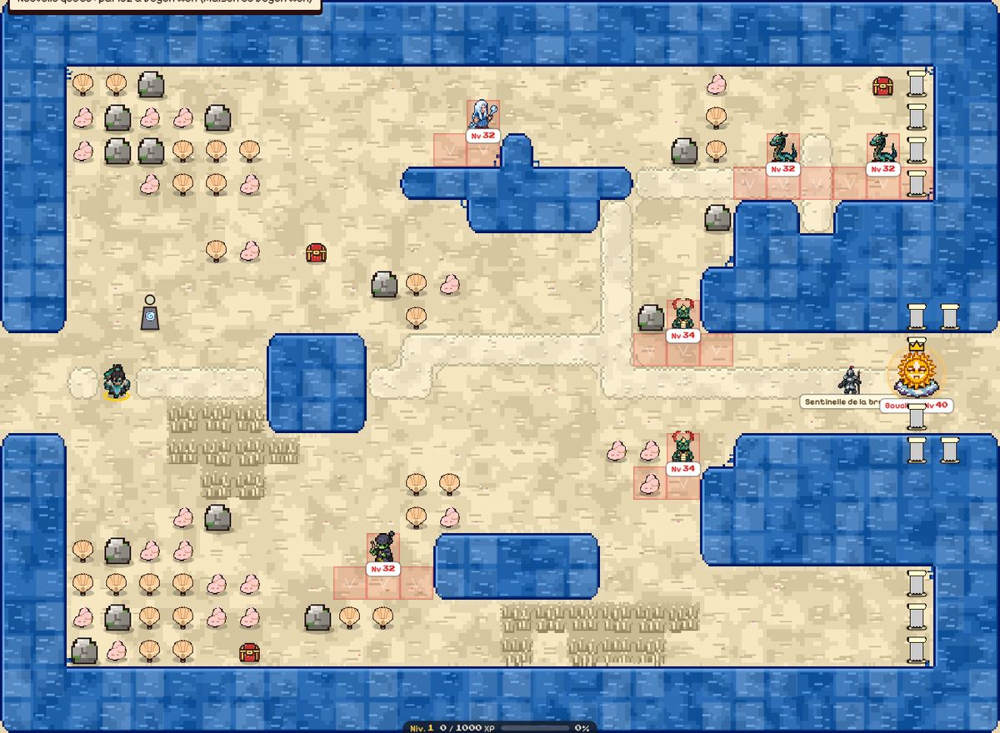
1
Rivage de la Mer Orientale : 1 Soleil des Marées (objectif) (cliquer pour agrandir)
La Grue (Messagère de la Reine Mère) — Nid de la messagère (partie nord de l’écran) Itinéraire depuis le village : Terrasses de Fusang-le-Bas → Nid de la messagère
Objectifs
Vaincre : Prouver votre courage à Changxi, mère des douze lunes (Autel de Mazu, au bout des Hautes-Eaux) Lieu : Autel de Mazu (partie est de l’écran)
Changxi, mère des douze lunes — niveau 41, ne réapparaît pas, immobile (sentinelle)
Lieu : Autel de Mazu (partie est de l’écran)
Espèce : Changxi (Divinité) — Force : Eau (bleu) — Faiblesse : Terre (vert) — très robuste, carapace épaisse, lanceur de sorts
Récompense
600 pièces d’or · 25470 points d’expérience · composant de flèche : Larme de Changxi
Où chercher
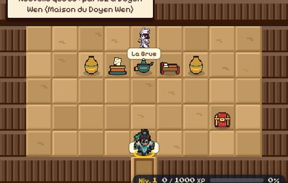
1
Nid de la messagère : 1 La Grue (donne la quête) (cliquer pour agrandir)
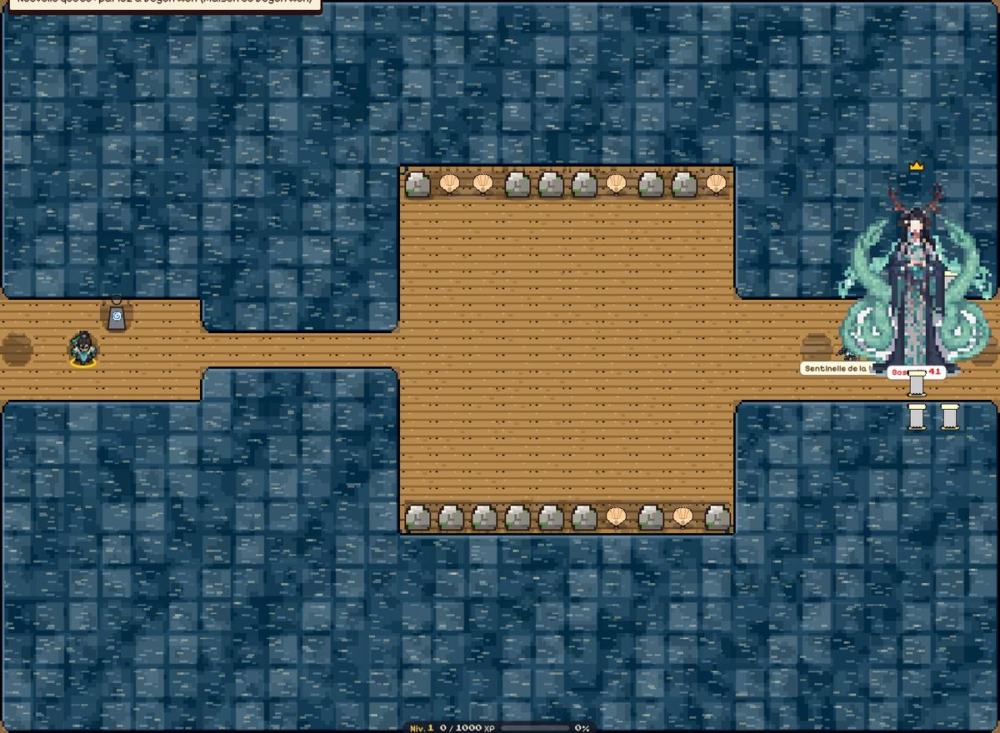
1
Autel de Mazu : 1 Changxi, mère des douze lunes (objectif) (cliquer pour agrandir)
La Grue (Messagère de la Reine Mère) — Nid de la messagère (partie nord de l’écran) Itinéraire depuis le village : Terrasses de Fusang-le-Bas → Nid de la messagère
Objectifs
Vaincre : Affronter Fengmeng au sommet du Pic de la Lune (duel en deux phases, au bout du sentier de lumière) Lieu : Pic de la Lune (partie nord-est de l’écran)
Fengmeng, Rage et Désespoir — niveau 48, ne réapparaît pas, immobile (sentinelle)
Lieu : Pic de la Lune (partie nord-est de l’écran)
Espèce : Fengmeng, Rage et Désespoir (Humain) — Force : Air (jaune) — Faiblesse : Feu (rouge) — très robuste, carapace épaisse, défenseur
Récompense
600 pièces d’or · 25470 points d’expérience · composant de flèche : Carquois de Fengmeng
Où chercher
1
Nid de la messagère : 1 La Grue (donne la quête) (cliquer pour agrandir)
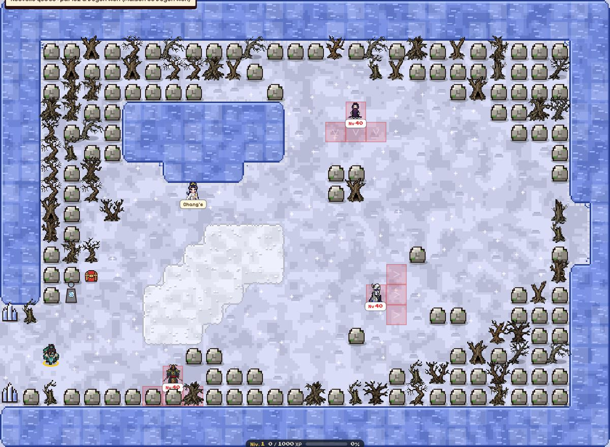
1
Pic de la Lune : 1 Fengmeng, Rage et Désespoir (objectif) (cliquer pour agrandir)
La Grue (Messagère de la Reine Mère) — Nid de la messagère (partie nord de l’écran) Itinéraire depuis le village : Terrasses de Fusang-le-Bas → Nid de la messagère
Objectifs
Vaincre : Abattre le Soleil Lâche sans toucher au Dixième Soleil (sanctuaire de la Cime du Fusang, au nord-est) Lieu : Cime du Fusang (partie est de l’écran) — itinéraire : Terrasses de Fusang-le-Bas → Racines et Branches Dorées → Cime du Fusang
Soleil Lâche — niveau 45, ne réapparaît pas, immobile (sentinelle)
Lieu : Cime du Fusang (partie est de l’écran)
Espèce : Soleil Lâche (Soleil) — Force : Feu (rouge) — Faiblesse : Eau (bleu) — très robuste, frappe fort, carapace épaisse, lanceur de sorts
Récompense
540 pièces d’or · 25470 points d’expérience · composant de flèche : Éclat du Soleil Lâche
Où chercher
1
Nid de la messagère : 1 La Grue (donne la quête) (cliquer pour agrandir)
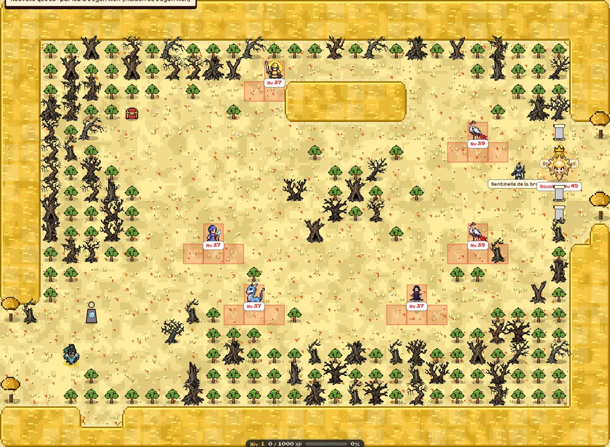
1
Cime du Fusang : 1 Soleil Lâche (objectif) (cliquer pour agrandir)
Chang'e (Vêtue de lumière lunaire) — Pic de la Lune (partie ouest de l’écran) Itinéraire depuis le village : Hameau sous la Lune → Sentier d'Argent → Pic de la Lune
Objectifs
Ouvrir : Déposer les gâteaux de lune sur l'autel (sommet du Pic de la Lune) Lieu : Pic de la Lune (partie est de l’écran) — itinéraire : Hameau sous la Lune → Sentier d'Argent → Pic de la Lune
Récompense
800 pièces d’or · 27700 points d’expérience · composant de flèche : Gâteau de pleine lune
Où chercher
12
Pic de la Lune : 1 Chang'e (donne la quête) · 2 Autel des gâteaux de lune (objectif) (cliquer pour agrandir)